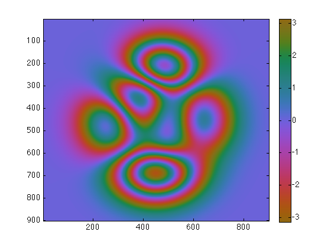
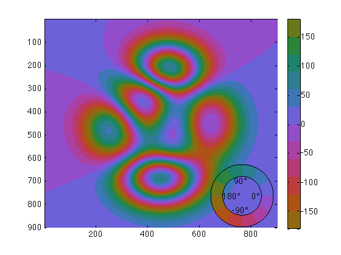

phasemap documentation
The phasemap function returns or sets a cyclic colormap with a constant lightness profile appropriate for plotting phase. The phasemap function is a break-out colormap from the cmocean package. If this colormap is useful for you, please consider citing our paper about it, which you can find here:
Thyng, K.M., C.A. Greene, R.D. Hetland, H.M. Zimmerle, and S.F. DiMarco. 2016. True colors of oceanography: Guidelines for effective and accurate colormap selection. Oceanography 29(3):9-13. http://dx.doi.org/10.5670/oceanog.2016.66
Contents
Syntax
phasemap M = phasemap(N) phasemap(...,'rad') phasemap(...,'deg')
Description
phasemap sets the current colormap to a 256-level phase map.
M = phasemap(N) returns an Nx3 matrix of RGB values for a phase colormap.
phasemap(...,'rad') sets axis limits of current colormap to caxis([-pi pi]).
phasemap(...,'deg') sets axis limits of current colormap to caxis([-180 180]).
Example 1: Radians:
Imagine some phase map ph in radians, which we'll wrap with phasewrap:
ph = phasewrap(2*peaks(900)); imagesc(ph) colorbar phasemap
Example 2: N-levels of degrees:
Imagine some phase map ph in degrees, which we'll wrap with phasewrap. Be sure to specify 'degrees' when calling phasewrap:
ph = phasewrap(100*peaks(900),'degrees'); imagesc(ph) colorbar phasemap(12) phasebar('location','se')
Author Info
This function was written by Chad A. Greene of the University of Texas at Austin's Institute for Geophysics (UTIG), May 2016. RGB values for this colormap were developed by Kristen Thyng. An aesthetically-pleasing and well-written summary of her cmocean colormaps can can be found here and her GitHub repository containing several nice colormaps is here.